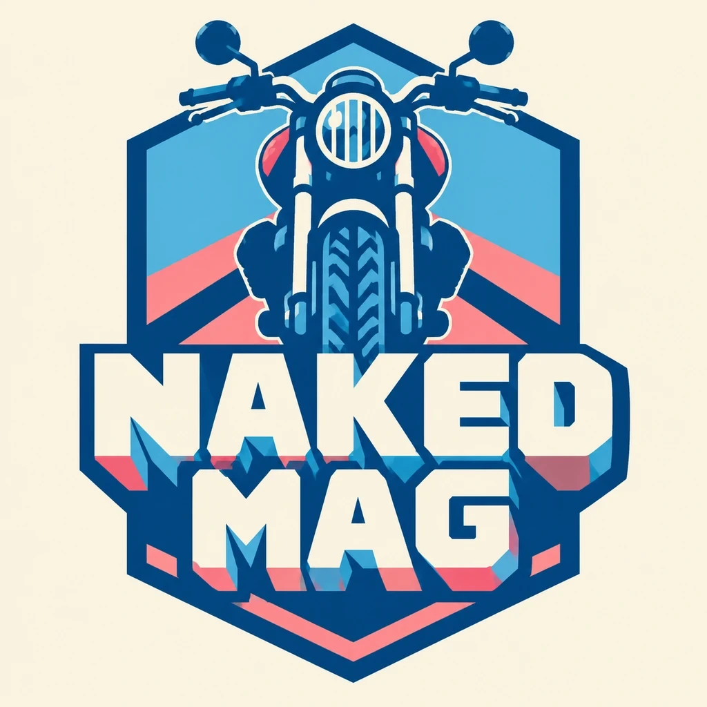
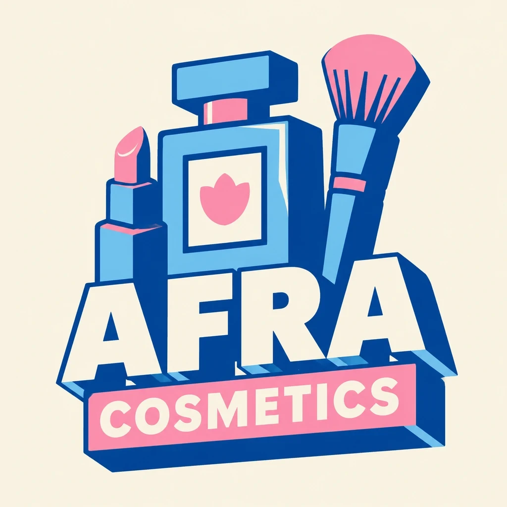
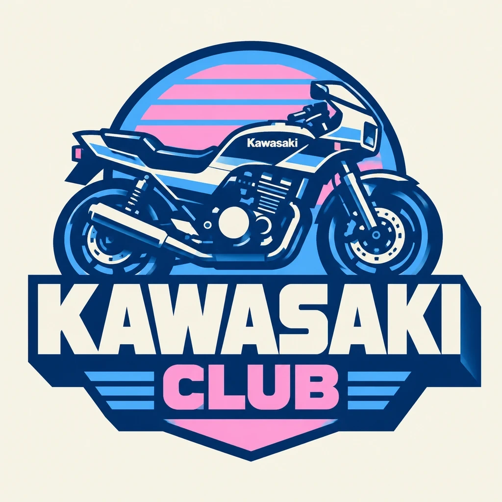
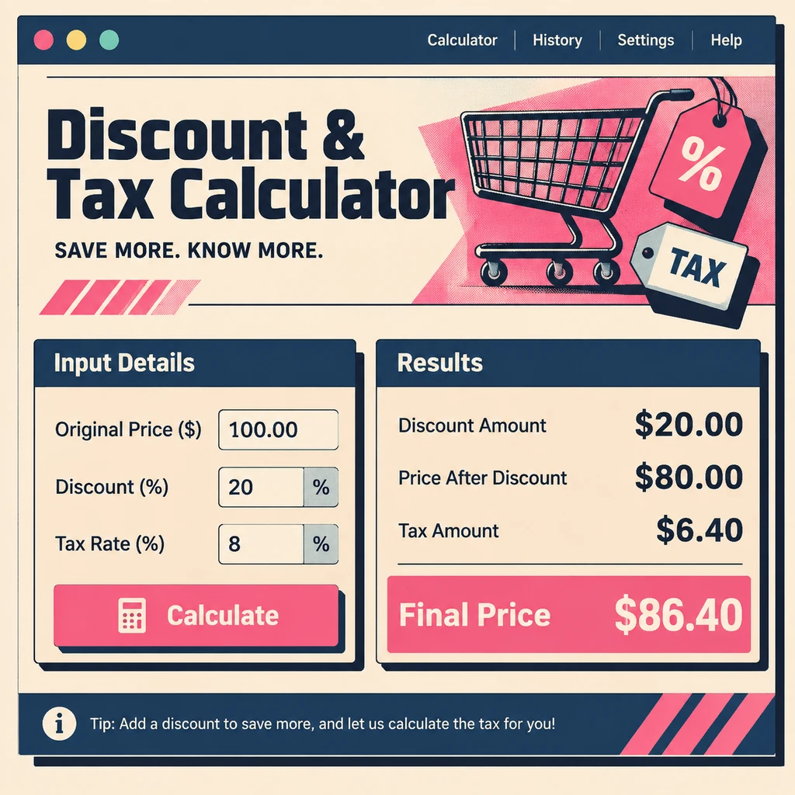
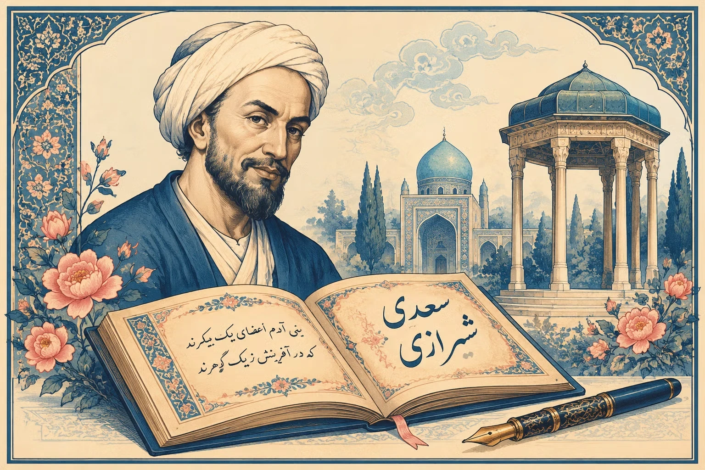

طراحی رابط کاربری
وبمجله تخصصی نیکد مگ
طراحی و توسعه تم تاریک، ساختار گرید و مدیریت محتوای چندرسانهای برای پلتفرم ژورنالیستی مستقل در حوزه موتورسیکلت.
تلاقی تفکر ساختاریافته سیاستگذاری اجتماعی در دانشگاه تهران با هنر مهندسی فرانتاند؛ توسعه محصولاتی تعاملی، بهینه، چشمنواز و متکی بر پایداری فنی.
مشاهده بخشی از نمونه کارها
طراحی و توسعه تم تاریک، ساختار گرید و مدیریت محتوای چندرسانهای برای پلتفرم ژورنالیستی مستقل در حوزه موتورسیکلت.

پیادهسازی فرمهای ثبتنام و ورود با اعتبارسنجی دقیق دادهها، طراحی کاملاً واکنشگرا و تجربه کاربری روان.

پیادهسازی رابط کاربری واکنشگرا و فرمهای ساختاریافته برای احراز هویت و عضویت جامعه موتورسواران با رعایت استانداردهای دسترسیپذیری و تعامل پایدار.

پیادهسازی یک ابزار محاسباتی تعاملی با اعتبارسنجی ورودیها، محاسبه آنی تخفیف و مالیات بر ارزش افزوده و استایل نئوبروتالیسم.

پیادهسازی وبسایت نهاد آموزشی برلین برای ترویج زبان، ادبیات و رویدادهای فرهنگی با ساختار محتوامحور، دسترسیپذیری بالا و طراحی واکنشگرا.

طراحی و پیادهسازی پلتفرم نقد و تحلیل سینما با پالت نئو نوآر، ساختار ریسپانسیو روان، منوی موبایل بهینهسازیشده و تایپوگرافی مقیاسپذیر بدون وابستگیهای سنگین.
پیادهسازی صفحات وب با ساختار معنایی، طراحی واکنشگرا و توجه به خوانایی، دسترسیپذیری و تجربه کاربر.
ساخت بخشهای تعاملی با جاوااسکریپت، بررسی ورودیهای کاربر و نمایش بازخورد روشن در فرمها و ابزارهای محاسباتی.
بارگذاری و ساماندهی محتوا، اصلاح ساختار صفحات و رسیدگی به مشکلات رابط کاربری با توجه به پایداری و نظم پروژه.
بهرهگیری از نگاه تحلیلی سیاستگذاری اجتماعی برای شناخت نیاز مخاطب، سازماندهی اطلاعات و تبدیل مسائل پیچیده به راهحلهای قابلفهم؛ همراه با تجربه تدریس و انتقال مفاهیم.